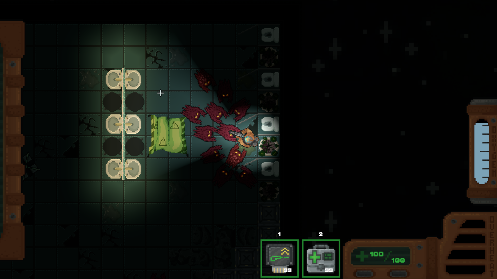
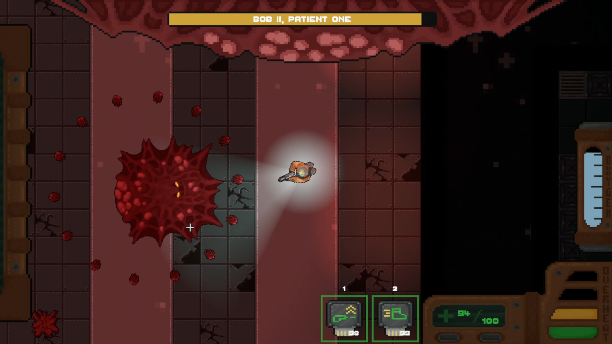
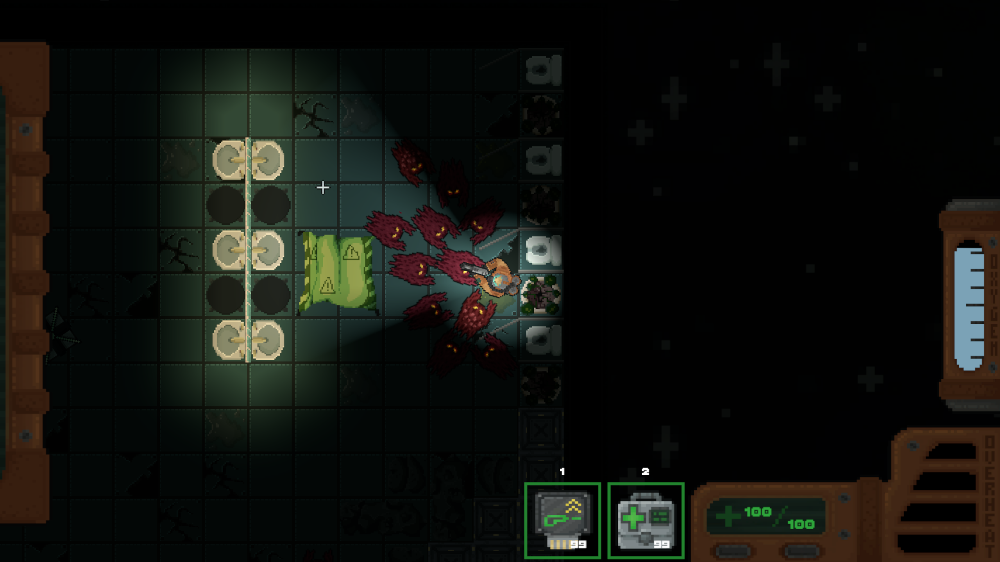
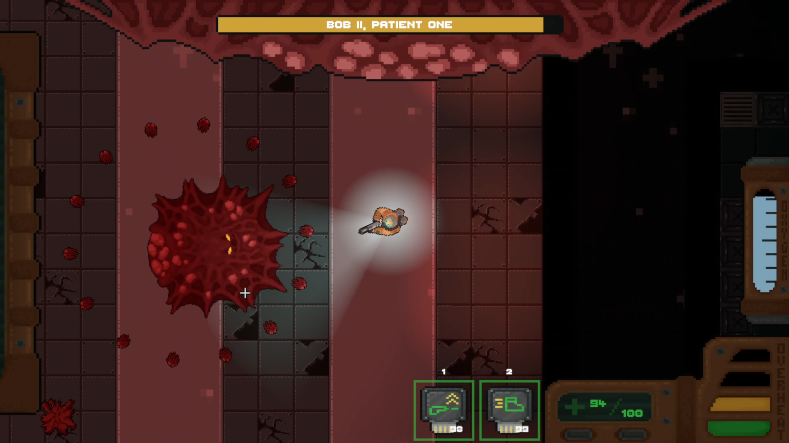

Bubble Bunny Bout - January 2025


A small game made by myself and a few friends for the 2 day long AGDS Halloween Jam 2024 made in the Unreal 5 Engine. Playing as the witch from Vanishing Act, and having successfully escaped the feds to your lakeside retreat, you are now on an eternal fishing holiday. My main contributions to this project were the bobbing of the fishing bobber, and the logic for when the player can catch a fish.
Fishyphus - November 2024

A small game made by myself and a few friends for the 2 day long AGDS Halloween Jam 2024 made in the Unreal 5 Engine. Playing as the witch from Vanishing Act, and having successfully escaped the feds to your lakeside retreat, you are now on an eternal fishing holiday. My main contributions to this project were the bobbing of the fishing bobber, and the logic for when the player can catch a fish.
Vanishing Act - September 2024

A project made by myself and a few friends for the AGDS Freshers Jam 2024 made in the Unreal 5 Engine. Playing as a witch stuck in your mansion as it's being raided by a demonic entity, gather the ingredients to perform a ritual to escape. My main contributions to this project were programming the player controller, the interaction system, and logic for progressing the ritual.
Operation Exodus - May 2024
 




A collaborative team project between myself and fellow students for the Professional Project module. Set on an overrun spaceship, Operation Exodus is a 2D top-down shooter created in the Unity Engine. My main contributions for this project were programming the mechanics for the player controller, weapon systems, the shop and upgrade systems, lootable crates, and item pickups.
Station Sentinels - May 2023


A group project between myself and a friend for the Games Programming module. Set on the space station of an evil robot army, you must travel through each level of the station, eliminating all hostiles on your way to the central server. This game was created using Abertay University's Games Educational Framework (GEF) in C++. My main contributions to this project were the weapon and projectile systems, the pickups, arcade mode, bug fixing of the procedural generation system, and optimisation of the model loader.